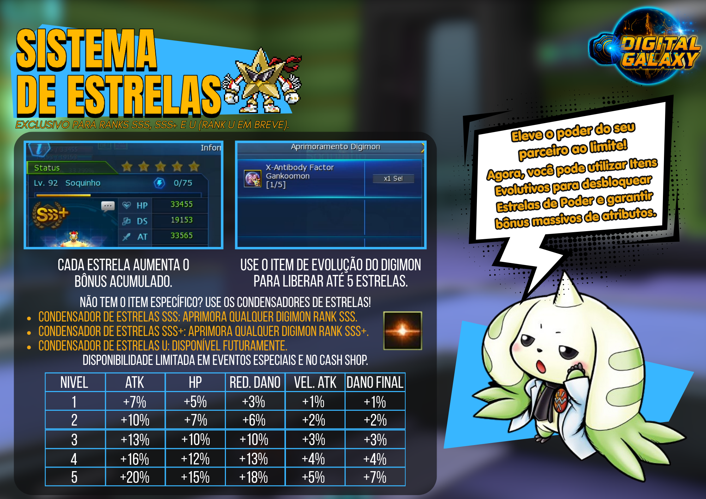
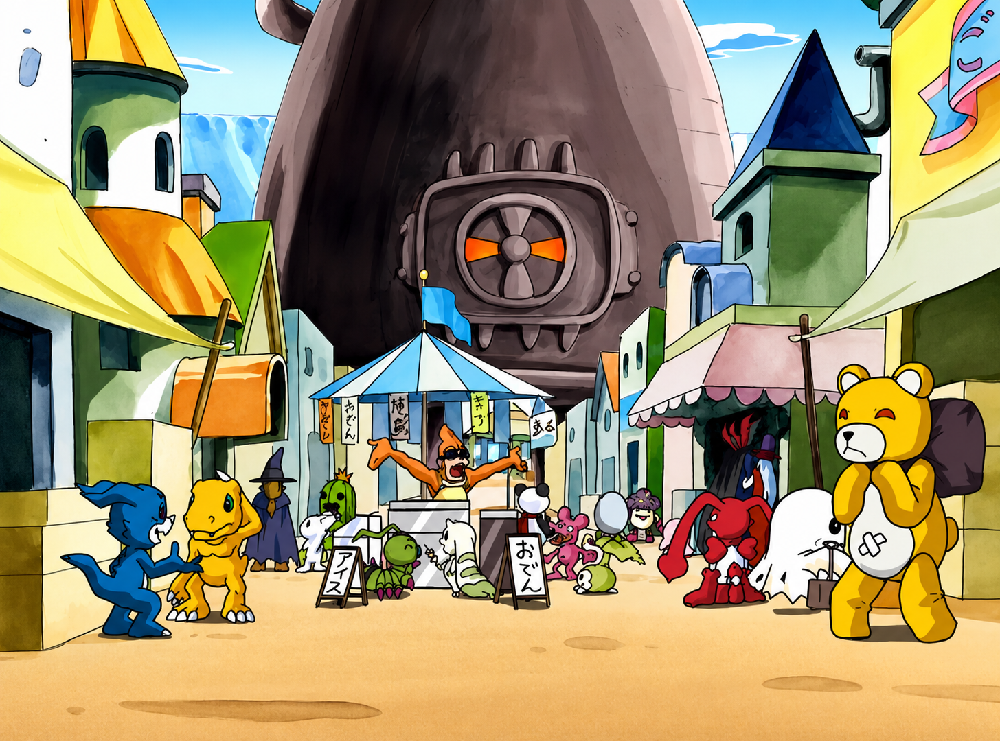

Digital Galaxy Wiki
Bem-vindo à Wiki DGO Brasil!
Aqui você encontrará...
Área do Novato
Banco de Dados de Digimons
Esta aba agora redireciona diretamente para a página oficial dos Digimons.
Abrir página de Digimons
Guias de Missões
Acompanhe a progressão permanente do servidor, dos tutoriais até The D-Reaper.
!
Rota de missões do Digital Galaxy
Escolha uma região para ver a ordem, os requisitos e o conteúdo liberado.
Marque as etapas concluídas. O progresso fica salvo neste navegador.
Dungeons
Mapas
Consulte a progressão, os acessos e os principais objetivos de cada região disponível no servidor.
⌖
Atlas do Digital Galaxy
Selecione uma região para consultar mapas, acessos, progressão e conteúdos conectados.
Sistemas
Consulte os sistemas exclusivos e os principais recursos de progressão do Digital Galaxy.

Sistemas exclusivos do Digital Galaxy
Selecione um sistema para consultar todos os detalhes.
NPCs & Lojas
Selecione um NPC para consultar seus serviços e informações.


NPCs e Lojas do Digital Galaxy
Selecione um NPC para ver todos os detalhes.
Eventos


Eventos do Digital Galaxy
Selecione um evento para ver todos os detalhes.
Vídeos
Assista aos guias, novidades e conteúdos do Digital Galaxy publicados no YouTube.
Olá, Tamer! Eu sou Gracenovamon seu guia inicial. Escolha uma opção abaixo para receber uma dica rápida.